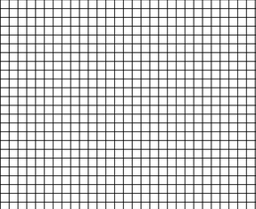
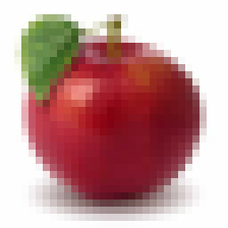
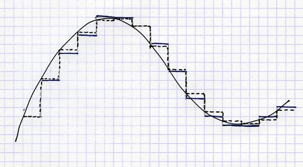
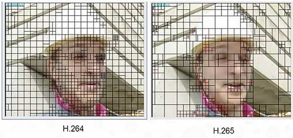

How does a computer program convert different types of data like images or text files into binary data?
Whatever thing you wish to represent in a computer, you need to find a way of converting it into numbers. This conversion process is sometimes completely faithful, meaning you can recover the original object precisely from the numbers, or it can be an approximation. In the latter case, the digital representation of your original object is incomplete in some ways, and the trick is to make it close enough in the areas that matter, meaning close enough so that under ordinary circumstances, we can hardly tell the difference, or not at all.
Text files are a simple example of an object that can generally be represented faithfully. A text file is just a sequence of letters in some language and other characters (spaces, punctuation marks, maybe a few special characters). The first order of business is to agree, once and for all, on a numerical representation for those characters - what number we use to represent 'A', what represents 'j', what is the number for space ' ' and so on.
One of the most common such schemes is called ASCII. This is just a simple table that lists 256 more-or-less useful characters including the English alphabet, the digits 0-9, symbols like '@' or '=' and so on. Most text files actually utilize a good deal less than 256 different symbols, and ASCII is really mostly used for the values between 0 and 127.
For example, in ASCII, 'A' is 65, 'B' is 66, 'C' is 67 and so on. The lower case letters start at 'a' (97) and end at 'z' (122). The digits 0-9 span the numbers 48 through 57. Space is 32. A line break
like
these
is actually represented by two symbols in ASCII, one called "line feed" or LF (10) and one called "carriage return" CR (13). This is a carry-over from old typewriter systems and is a well-known nuisance when dealing with text files; some systems insist on having a CR/LF combo at any line break, some don't, and hilarity ensues.
Anyway, if you have a text file and you wish to encode it in binary data, you first scan it from beginning to end, converting each character to its ASCII code. Now you have a sequence of numbers; each such number takes no more than 3 decimal digits to write down (like 122), and if you write it in base 2 instead of base 10 (which is what "binary" means) you need at most 8 digits (called "bits"). Thus every character in a text file requires 8 bits. Computer people like uniformity, so all numbers are represented using all 8 bits, even those which could be written with less. For example, CR is 13 which in binary is 1101 (eight plus four plus (skip the twos column, so zero) plus one), but when storing a text file we would store this character as 00001101. This is just like we had used 013 instead of 13 for the decimal representation. The advantage is that you don't need to have any sort of separator between numbers: every 8 bits is a number, and then comes the next one.
A short piece of text like 'Quora' becomes the sequence 81, 117, 111, 114, 97 which in binary is 0101000101110101011011110111001001100001. So here's a binary encoding of a tiny text file.
Of course, once you enlarge the scope of "text files" to cover things with a higher variety of characters, letter sizes, tables and stuff, you'll need more elaborate representation schemes. Let's stop here for now and move on to more exciting objects.
Images begin as physical objects in our physical world: patterns of color and light hitting our retinae. The first order of business is to capture those patterns somehow, which is what cameras do. Older, "analog" cameras capture the light and imprint it on various kinds of film; newer, "digital" cameras employ A/D converters in the body of the camera to transform the real-life color signal into numbers.
The way this happens is, roughly, this. Imagine your field of view is divided into a fine grid of little squares.
Every tiny square on the grid has a color which is more or less uniform across the entire square. The tinier the squares, the more accurate this is. If the squares are large, you may see a shift from dark to light or from red to lighter red inside of a square, so if anyone asks you "what is the color in that square" you'd be hard pressed to give a definite answer. But if the grid is very very fine, most of the time a square will be close enough to having just one single color; in fact, if you replace the real image with one where each square has precisely that one color, a person won't be able to tell the difference.
This apple isn't really an apple: It's just an array of 256 rows and 256 columns of little squares, and each square has a specific, uniform color. Can you see the little squares? Not really, but if we used a much coarser grid, we would have gotten something like this:
Ok. So now we have lots of pixels and each pixel has a color. We need to represent each pixel as a number (or a few numbers), and then we can store those numbers as bits just as we did before.
There are various ways of doing that. A common way uses a color scheme relying on Red, Green and Blue, and measures how much of each are in each square (this is done with color filters, following which the intensity of the light is captured with a sensor). Each color is measured on a scale of 0 to 255, say (which is 8 bits), so you get 24 bits in all for each pixel. Once you've done this, you have an array of 24-bit numbers instead of an array of squares. You arrange those numbers in sequence, add some extra information to explain how the file is structured (for instance, how many rows and how many columns it has), and that's it.
The process of converting the original image into numbers can be seen as a sequence of "sampling" or "making something discrete". ("Discrete" means that it has a definite number of possible values, instead of a continuum of infinitely many). We divided the image both horizontally and vertically into strips and pixels, and then we divided "color space" into a finite number of possible values. This process of sampling is what lies behind most analog-to-digital conversion schemes.
In practice, most image file formats employ an additional step called compression. The reasons is this: the relatively small apple image we started with has 256 x 256 = 65,536 pixels. Each such pixel needs 24 bits, so just this apple would require 1,572,864 bits. That's quite a lot, if you think about the number of photos you have on your computer or Facebook account. It therefore behooves us to find ways of using less bits per image, and this is achieved via compression. JPEG, GIF and PNG files utilize various such compression schemes. That's a whole other can of worms which we should save for a separate answer.
Our audio perception is based on sensing changes in air pressure inside of our ears. We have two ears, so we hear things in "stereo"; the main issue here is how to represent what we hear in one ear (a "mono" file) and then we can take care of our two ears just by using two such representations.
An audio signal (in one ear) is, therefore, merely "air pressure as a function of time". A microphone converts those changing pressures into an analog electric signal, and we now need to convert those analog signals into - as always - a sequence of numbers. We need, again, to sample.
A good way to visualize the process is like this:
We have a continuously-varying signal (time pressure, or electric current), represented here as a graph with time flowing to the right and magnitude going up. We now divvy up time into a finite but dense sequence of sample points, and at each such point we take a reading of the magnitude and store its value - approximately - as a number.
The rapidness in which we sample is called sampling frequency. A typical sampling frequency for audio signals is 48,000 samples per second (44,100 was the standard for audio CDs). Why 48,000 and not 100 or 1,000,000? Well, humans hear sound frequencies up to 20kHz, which is when the air pressure vibrates 20,000 times per second (most people are less sensitive, but it's good to be safe). It turns out that if you wish to catch something that goes up and down X times per second, you had better sample it at 2X times per second. This is kind of intuitive: if you only sampled at X times per second, you'd always catch the signal at its peak or trough and you wouldn't even notice it's oscillating. Mathematically this is known as the Nyquist–Shannon theorem.
So, we sample 48,000 times per second. The vertical range of magnitudes is sampled into 256 levels (8 bit) or 65536 levels (16 bit) or, most accurately, about 16 million levels (24 bit). For each sample point we now have a number, and the whole audio signal is no more than a sequence of numbers. Take two sequences for a stereo signal (or more for a spatial signal, like we sometimes do in home theater systems), convert them to binary, add metadata to delineate the structure of the file, and you're done.
Once again, compression is often used to make the files more manageable: mp3 files, for example, use a common compression scheme.
The audio track of a movie or YouTube clip is an audio file, which we've covered, so let's focus on the "moving image" part (I'm suppressing for now the messy issue of synchronizing the video with the audio. Trust me, it's messy. Google "drop frame" or "29.97" for the gory details.)
By now you've gotten the hang of sampling, so you can guess what happens next: a video is just an image with an added dimension of time. In the physical world time is continuous, but for the benefit of our computer we need to sample time, much like we did with audio.
So we take our moving images as seen through the video camera, and snap them every once in a while. How frequently? It turns out that in this respect, our eyes are a lot less finicky than our ears. Capturing a still image 20-30 times per second and then playing it back at the same pace yields a fairly convincing illusion of continuous movement. This was known to the early filmmakers, although to save clutter they sometimes opted for even slower rates (The Lumière brothers made do with 16 frames per second).
Modern, popular video formats capture images at 24fps or 30fps (fps = frames per second). Your HDTV does 50 or 60fps, which is quite a bit more than the minimum necessary but helps create even more fluid, crisp images (side note: the fact that multiple standards exist for the frame rate, including 24fps, 25fps, 29.97fps, 30fps, 60fps and others is another source of serious trouble - resampling one of these into another is a terrible mess).
So, the basics are simple: capture lots of images at a sufficiently high rate, convert each image into numbers as covered above, add the necessary metadata and you have your video file.
Video files provide an opportunity to discuss another cool nuance: the file format may leave room for the encoder to make clever decisions. Here's how it works with video files.
Remember how we said that image files may need to get compressed? Well obviously, video provides ample motivation for us to compress even more diligently. Let's do the math for a standard definition, 90-minute movie:
Uncompressed, this would take up 150 gigabytes (GB) of disk space, and that's just standard def; go HD and you're looking at 8 times that (double rows, double columns and double fps). More than a terabyte per movie isn't going to fly, and we didn't even consider the audio portion.
So we've already mentioned that individual images can be compressed, but for video we can (and need to) do better. It should be clear that most frames in a video are very similar to the ones that came just before them. Every once in a while there'll be a "cut" where the frame changes completely, but most of the time, what you see in front of you is very similar to what you see 1/30 of a second later.
How can we utilize this? One approach which I will describe just roughly (this answer is long enough) is to hunt for blocks inside frame N+1 that are almost identical to those in frame N, only shifted a little bit (think of a panning shot, or a still room with some people walking). Then, frame N is stored in full, but frame N+1 stores just the block locations, the vertical and horizontal shifts of each block, and the in-block changes which are mostly 0's. Chunks of digits that are mostly 0 can be efficiently compressed, so frame N+1 will take up a lot less space than it otherwise would have.
What this means is that the file format needs to specify how those blocks are arranged, how the shifts are stored, etc., but it doesn't say anything about how to actually compress. A dumb video encoder can simply not use this feature at all, or use it only rarely, and that yields a perfectly valid video file - albeit a very large one. A smarter encoder would work hard to optimize the division into blocks, the correct matching of the next block and the previous block, and the differences, and would create a much smaller file that could be opened by the same video decoder and would look almost exactly the same.
Those are the very basics - there are of course lots of variations, lots of details I had omitted and many other types of information we learned to digitize effectively. I'm leaving room for future (or past) questions.
Text
Text files are a simple example of an object that can generally be represented faithfully. A text file is just a sequence of letters in some language and other characters (spaces, punctuation marks, maybe a few special characters). The first order of business is to agree, once and for all, on a numerical representation for those characters - what number we use to represent 'A', what represents 'j', what is the number for space ' ' and so on.
One of the most common such schemes is called ASCII. This is just a simple table that lists 256 more-or-less useful characters including the English alphabet, the digits 0-9, symbols like '@' or '=' and so on. Most text files actually utilize a good deal less than 256 different symbols, and ASCII is really mostly used for the values between 0 and 127.
For example, in ASCII, 'A' is 65, 'B' is 66, 'C' is 67 and so on. The lower case letters start at 'a' (97) and end at 'z' (122). The digits 0-9 span the numbers 48 through 57. Space is 32. A line break
like
these
is actually represented by two symbols in ASCII, one called "line feed" or LF (10) and one called "carriage return" CR (13). This is a carry-over from old typewriter systems and is a well-known nuisance when dealing with text files; some systems insist on having a CR/LF combo at any line break, some don't, and hilarity ensues.
Anyway, if you have a text file and you wish to encode it in binary data, you first scan it from beginning to end, converting each character to its ASCII code. Now you have a sequence of numbers; each such number takes no more than 3 decimal digits to write down (like 122), and if you write it in base 2 instead of base 10 (which is what "binary" means) you need at most 8 digits (called "bits"). Thus every character in a text file requires 8 bits. Computer people like uniformity, so all numbers are represented using all 8 bits, even those which could be written with less. For example, CR is 13 which in binary is 1101 (eight plus four plus (skip the twos column, so zero) plus one), but when storing a text file we would store this character as 00001101. This is just like we had used 013 instead of 13 for the decimal representation. The advantage is that you don't need to have any sort of separator between numbers: every 8 bits is a number, and then comes the next one.
A short piece of text like 'Quora' becomes the sequence 81, 117, 111, 114, 97 which in binary is 0101000101110101011011110111001001100001. So here's a binary encoding of a tiny text file.
Of course, once you enlarge the scope of "text files" to cover things with a higher variety of characters, letter sizes, tables and stuff, you'll need more elaborate representation schemes. Let's stop here for now and move on to more exciting objects.
Images
Images begin as physical objects in our physical world: patterns of color and light hitting our retinae. The first order of business is to capture those patterns somehow, which is what cameras do. Older, "analog" cameras capture the light and imprint it on various kinds of film; newer, "digital" cameras employ A/D converters in the body of the camera to transform the real-life color signal into numbers.
The way this happens is, roughly, this. Imagine your field of view is divided into a fine grid of little squares.

Every tiny square on the grid has a color which is more or less uniform across the entire square. The tinier the squares, the more accurate this is. If the squares are large, you may see a shift from dark to light or from red to lighter red inside of a square, so if anyone asks you "what is the color in that square" you'd be hard pressed to give a definite answer. But if the grid is very very fine, most of the time a square will be close enough to having just one single color; in fact, if you replace the real image with one where each square has precisely that one color, a person won't be able to tell the difference.
This apple isn't really an apple: It's just an array of 256 rows and 256 columns of little squares, and each square has a specific, uniform color. Can you see the little squares? Not really, but if we used a much coarser grid, we would have gotten something like this:

This looks a lot less like an apple and a lot more like an array of squares. We call those squares "pixels", for "picture elements".Ok. So now we have lots of pixels and each pixel has a color. We need to represent each pixel as a number (or a few numbers), and then we can store those numbers as bits just as we did before.
There are various ways of doing that. A common way uses a color scheme relying on Red, Green and Blue, and measures how much of each are in each square (this is done with color filters, following which the intensity of the light is captured with a sensor). Each color is measured on a scale of 0 to 255, say (which is 8 bits), so you get 24 bits in all for each pixel. Once you've done this, you have an array of 24-bit numbers instead of an array of squares. You arrange those numbers in sequence, add some extra information to explain how the file is structured (for instance, how many rows and how many columns it has), and that's it.
The process of converting the original image into numbers can be seen as a sequence of "sampling" or "making something discrete". ("Discrete" means that it has a definite number of possible values, instead of a continuum of infinitely many). We divided the image both horizontally and vertically into strips and pixels, and then we divided "color space" into a finite number of possible values. This process of sampling is what lies behind most analog-to-digital conversion schemes.
In practice, most image file formats employ an additional step called compression. The reasons is this: the relatively small apple image we started with has 256 x 256 = 65,536 pixels. Each such pixel needs 24 bits, so just this apple would require 1,572,864 bits. That's quite a lot, if you think about the number of photos you have on your computer or Facebook account. It therefore behooves us to find ways of using less bits per image, and this is achieved via compression. JPEG, GIF and PNG files utilize various such compression schemes. That's a whole other can of worms which we should save for a separate answer.
Audio and Music
Our audio perception is based on sensing changes in air pressure inside of our ears. We have two ears, so we hear things in "stereo"; the main issue here is how to represent what we hear in one ear (a "mono" file) and then we can take care of our two ears just by using two such representations.
An audio signal (in one ear) is, therefore, merely "air pressure as a function of time". A microphone converts those changing pressures into an analog electric signal, and we now need to convert those analog signals into - as always - a sequence of numbers. We need, again, to sample.
A good way to visualize the process is like this:

We have a continuously-varying signal (time pressure, or electric current), represented here as a graph with time flowing to the right and magnitude going up. We now divvy up time into a finite but dense sequence of sample points, and at each such point we take a reading of the magnitude and store its value - approximately - as a number.
The rapidness in which we sample is called sampling frequency. A typical sampling frequency for audio signals is 48,000 samples per second (44,100 was the standard for audio CDs). Why 48,000 and not 100 or 1,000,000? Well, humans hear sound frequencies up to 20kHz, which is when the air pressure vibrates 20,000 times per second (most people are less sensitive, but it's good to be safe). It turns out that if you wish to catch something that goes up and down X times per second, you had better sample it at 2X times per second. This is kind of intuitive: if you only sampled at X times per second, you'd always catch the signal at its peak or trough and you wouldn't even notice it's oscillating. Mathematically this is known as the Nyquist–Shannon theorem.
So, we sample 48,000 times per second. The vertical range of magnitudes is sampled into 256 levels (8 bit) or 65536 levels (16 bit) or, most accurately, about 16 million levels (24 bit). For each sample point we now have a number, and the whole audio signal is no more than a sequence of numbers. Take two sequences for a stereo signal (or more for a spatial signal, like we sometimes do in home theater systems), convert them to binary, add metadata to delineate the structure of the file, and you're done.
Once again, compression is often used to make the files more manageable: mp3 files, for example, use a common compression scheme.
Video
The audio track of a movie or YouTube clip is an audio file, which we've covered, so let's focus on the "moving image" part (I'm suppressing for now the messy issue of synchronizing the video with the audio. Trust me, it's messy. Google "drop frame" or "29.97" for the gory details.)
By now you've gotten the hang of sampling, so you can guess what happens next: a video is just an image with an added dimension of time. In the physical world time is continuous, but for the benefit of our computer we need to sample time, much like we did with audio.
So we take our moving images as seen through the video camera, and snap them every once in a while. How frequently? It turns out that in this respect, our eyes are a lot less finicky than our ears. Capturing a still image 20-30 times per second and then playing it back at the same pace yields a fairly convincing illusion of continuous movement. This was known to the early filmmakers, although to save clutter they sometimes opted for even slower rates (The Lumière brothers made do with 16 frames per second).
http://www.youtube.com/watch?v=J...
Modern, popular video formats capture images at 24fps or 30fps (fps = frames per second). Your HDTV does 50 or 60fps, which is quite a bit more than the minimum necessary but helps create even more fluid, crisp images (side note: the fact that multiple standards exist for the frame rate, including 24fps, 25fps, 29.97fps, 30fps, 60fps and others is another source of serious trouble - resampling one of these into another is a terrible mess).
So, the basics are simple: capture lots of images at a sufficiently high rate, convert each image into numbers as covered above, add the necessary metadata and you have your video file.
Video files provide an opportunity to discuss another cool nuance: the file format may leave room for the encoder to make clever decisions. Here's how it works with video files.
Remember how we said that image files may need to get compressed? Well obviously, video provides ample motivation for us to compress even more diligently. Let's do the math for a standard definition, 90-minute movie:
- 90 minutes
- 60 seconds per minute
- 30 frames per second
- 480 rows per image
- 640 pixels per row
- 3 bytes (24 bits) per pixel
Uncompressed, this would take up 150 gigabytes (GB) of disk space, and that's just standard def; go HD and you're looking at 8 times that (double rows, double columns and double fps). More than a terabyte per movie isn't going to fly, and we didn't even consider the audio portion.
So we've already mentioned that individual images can be compressed, but for video we can (and need to) do better. It should be clear that most frames in a video are very similar to the ones that came just before them. Every once in a while there'll be a "cut" where the frame changes completely, but most of the time, what you see in front of you is very similar to what you see 1/30 of a second later.
How can we utilize this? One approach which I will describe just roughly (this answer is long enough) is to hunt for blocks inside frame N+1 that are almost identical to those in frame N, only shifted a little bit (think of a panning shot, or a still room with some people walking). Then, frame N is stored in full, but frame N+1 stores just the block locations, the vertical and horizontal shifts of each block, and the in-block changes which are mostly 0's. Chunks of digits that are mostly 0 can be efficiently compressed, so frame N+1 will take up a lot less space than it otherwise would have.
What this means is that the file format needs to specify how those blocks are arranged, how the shifts are stored, etc., but it doesn't say anything about how to actually compress. A dumb video encoder can simply not use this feature at all, or use it only rarely, and that yields a perfectly valid video file - albeit a very large one. A smarter encoder would work hard to optimize the division into blocks, the correct matching of the next block and the previous block, and the differences, and would create a much smaller file that could be opened by the same video decoder and would look almost exactly the same.

(this image demonstrates how the block-finding algorithm of H.265, aka High Efficiency Video Coding, is more flexible than that of H.264, making it significantly more effective in achieving high image quality at low bandwidth).Those are the very basics - there are of course lots of variations, lots of details I had omitted and many other types of information we learned to digitize effectively. I'm leaving room for future (or past) questions.
Originally posted on Quora: https://qr.ae/pFmzJR